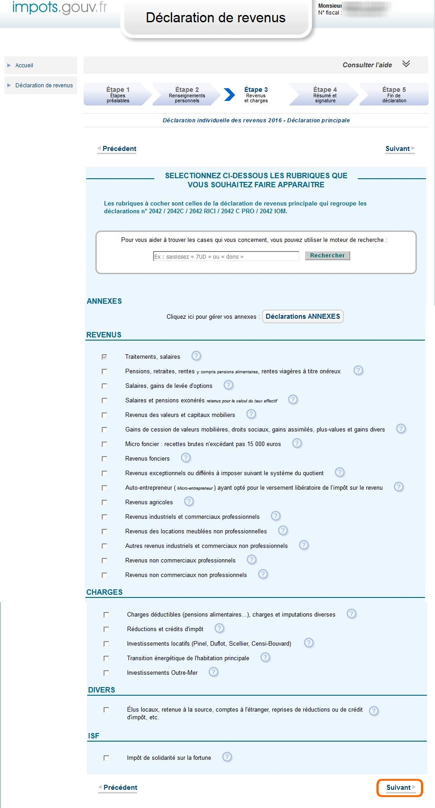

Dans le cadre de la déclaration préremplie, l'écran est précoché si l'administration a connaissance de revenus concernant l'usager.
Si l'usager à d'autres revenus à déclarer, il doit sélectionner les rubriques concernées.
Puis cliquer sur "Suivant".